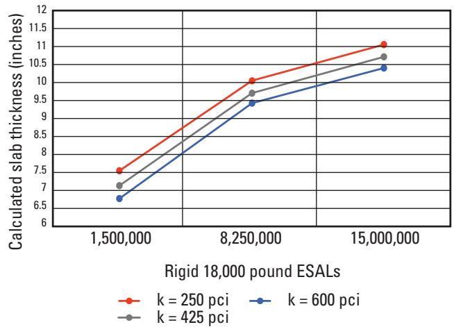
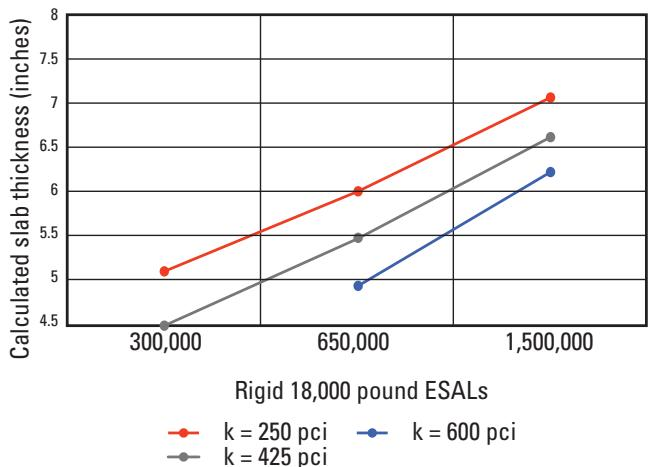
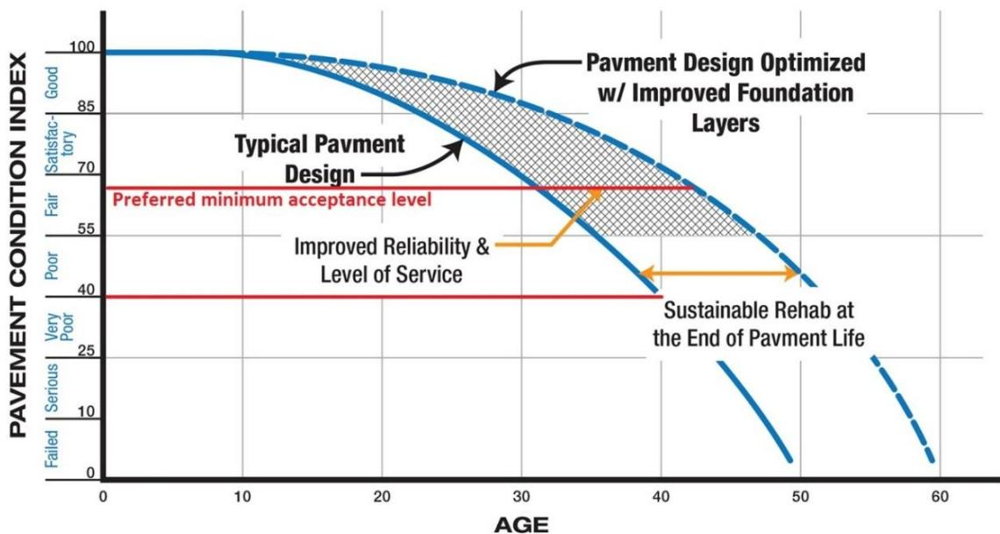
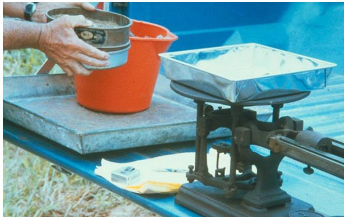
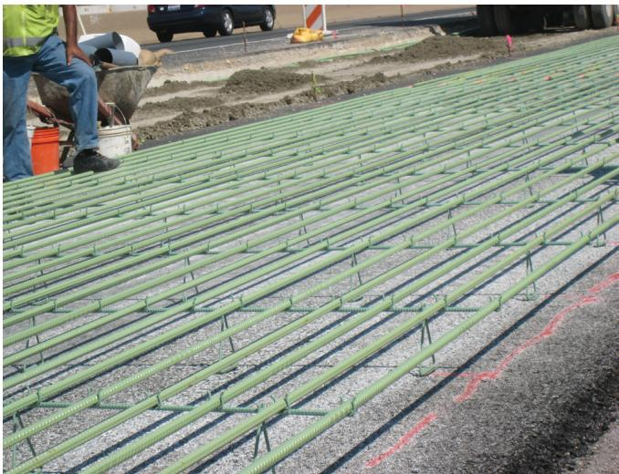
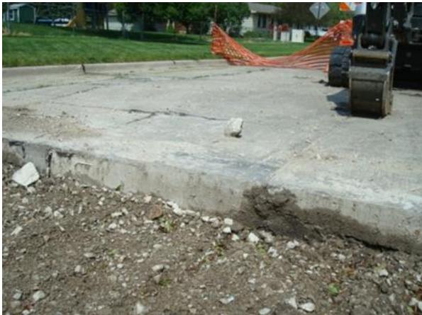
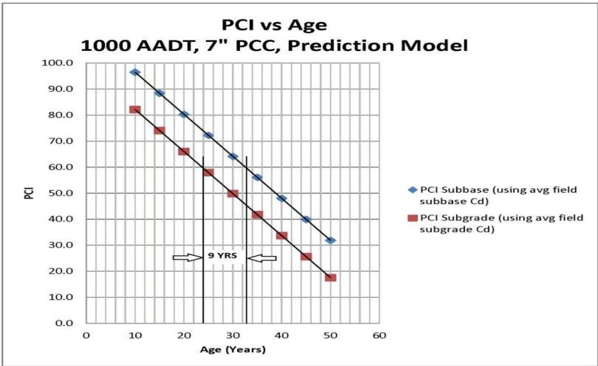
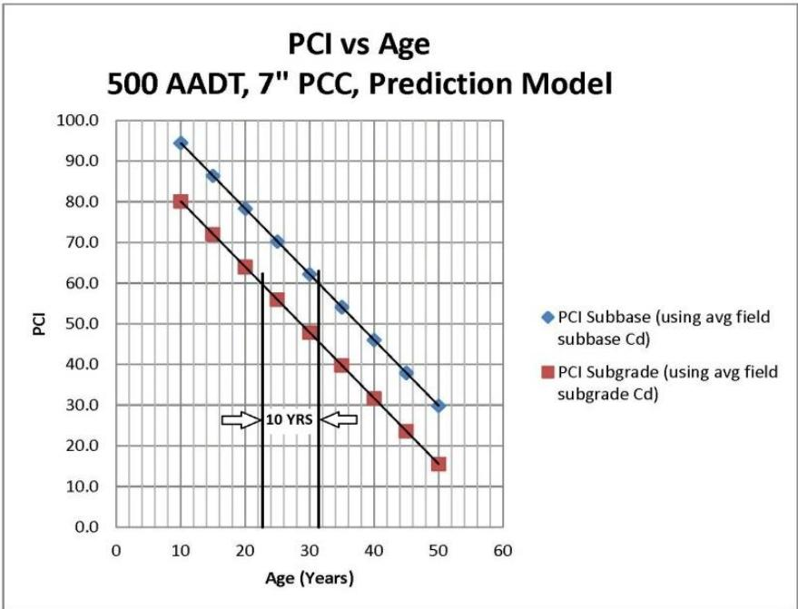

Concrete Pavement Design Optimization
Concrete pavement design optimization is a mechanistic‑empirical approach that selects slab thickness, joint layout, base treatment, drainage, reinforcement and other details so that a concrete slab meets prescribed structural capacity and functional ride‑quality targets over its intended service life while minimizing total cost [1][2]. It integrates stress–strain–deflection analysis with empirically calibrated damage‑accumulation models, using site‑specific inputs on traffic loading, subgrade stiffness, drainage and material properties to predict distress such as cracking, faulting and roughness, thereby balancing durability against life‑cycle cost, environmental impact and societal needs [3][4]. The process relies on in‑place testing of support conditions and iterative software tools (e.g., AASHTOWare ME Design, DARWIN M‑E™) to ensure that the chosen combination of thickness, concrete strength and foundation support provides reliable performance even under variable environmental and loading conditions [5][6]
Sources (13)
Purpose and design objectives
Concrete pavement design optimization addresses the fundamental engineering problem of delivering a concrete slab that reliably meets structural capacity and functional ride‑quality requirements over its intended service life while accounting for variable support conditions, traffic loading, environmental effects, and economic constraints. The guides describe this need as “aimed at correcting the mismatch between assumed design inputs and the actual, highly variable support layer conditions that cause joint deterioration and inconsistent performance,” and note that “improving subgrade strength/stiffness within the top 16 in. of the subgrade layer, improving drainage, and reducing variability led to improvement in pavement performance.” Reliability can be enhanced “by using in‑place testing.” Design must “select a pavement slab thickness and design details—such as joint dimensions, base considerations, drainage, load‑transfer requirements, reinforcement, and so on—that will economically meet the traffic loading, soil, and climatic conditions of a specific paving project.” The optimization is intended “to solve the problem of predicting and limiting pavement deterioration caused by repeated traffic loading, so that slabs meet durability targets such as acceptable cracking, faulting, and surface smoothness over their service life,” and it does so “by balancing structural capacity with functional performance while accounting for life‑cycle cost, environmental impact, and societal needs… delivering a pavement that remains serviceable throughout its design period.” It also seeks “to provide a new concrete slab that meets prescribed serviceability and structural performance requirements while using the least costly combination of thickness, material strength, and support conditions,” with “optimization … to select the most economically feasible alternative for a fixed level of pavement performance.” The problem includes “inadequate and highly variable foundation support for Portland‑Cement Concrete (PCC) slabs,” where “uniformity of pavement support conditions plays a critical role in long‑term performance of PCC pavements.” Thickness must keep “flexural stresses and fatigue damage from wheel loads within allowable limits, compensating for the lack of dowels or steel reinforcement to transfer loads,” acknowledging that “the minimum thickness of an RCC pavement is typically 4 in. (100 mm).” When recycled concrete aggregate is used, the design must “guarantee that a concrete slab will possess sufficient structural capacity and long‑term durability under traffic loads and environmental exposure.” Thin‑slab concepts target “the excessive stress in conventional concrete slabs caused by combined traffic loads and temperature/moisture gradients… leading to fatigue cracking,” noting that “by reducing slab size to a square with the dimensions of one‑half a lane (6 ft by 6 ft), the stresses generated are significantly reduced.” The approach also aims “to prevent material‑related cracking by ensuring the slab has adequate fatigue resistance for the anticipated traffic loads,” while recognizing that “although uniformity of the support is very important, the actual level of support has a relatively minor effect on thickness.” Anticipating deterioration allows planners to “use that prediction to plan cost‑effective preservation or rehabilitation actions at the right time.” For existing pavements, optimization “resolves the need for an appropriate overlay thickness that will meet performance goals on existing hot‑mix asphalt trails.” Overall, it “solves the difficulty of accurately forecasting how traffic loads cause damage over a pavement’s service life… preventing excessive cracking, faulting, or roughness while avoiding overly conservative designs,” using mechanistic‑empirical methods where “M‑E design combines mechanistic principles (stress/strain/deflection analysis and resulting damage accumulation) with local field verification and calibration.” [1][2][3][4][5][6][7][8][9][10][11]
The following figure illustrates how non-uniform subgrade conditions lead to stress concentrations within the concrete pavement.
 Illustration of stress concentration in a concrete pavement caused by non-uniform subgrade support. [11]
Illustration of stress concentration in a concrete pavement caused by non-uniform subgrade support. [11]
The figure depicts a cross-section of a concrete pavement slab supported by three distinct zones: two stiff subgrades flanking a central soft subgrade. A red oval highlights the area directly above the soft subgrade, where dense lines indicate stress concentration within the pavement slab. This visualizes how non-uniformity in support conditions leads to stress concentrations that may cause premature failure of the concrete pavement.
[1] — Ch. 3 (p. 20); [2] — Ch. 2 (pp. 29–31), Ch. 3 (pp. 49–62), Ch. 10 (p. 325); [3] — Ch. 4 (pp. 50–55); [4] — Summary of TR-640 Testing (pp. 24–26), Increased Performance (pp. 36–38), Increased Reliability (p. 38), PCI Prediction Model (pp. 22–24), PROJECT OBJECTIVES (p. 8), Pavement Performance (p. 19), Pavement Thickness Design (pp. 15–16), SUMMARY (pp. 39–42), WHAT WAS LEARNED FROM THE IHRB… (p. 16); [5] — Design (pp. 50–51); [6] — Ch. 6 (p. 62); [7] — Ch. 1 (pp. 32–33); [8] — Ch. 4 (p. 334); [9] — Ch. 2 (p. 33); [10] — App. A (p. 35); [11] — 2. Factors Influencing Long-Li… (p. 16)
The design process begins by “identifying functional and structural requirements, including the design life and constraints”. Functional performance is defined as the slab’s ability to “reliably support the expected traffic loads throughout construction and service life” and to provide users a safe, quiet, and comfortable ride for a specified range of speed, as expressed in “Functional performance is a pavement’s ability to provide users a safe, quiet, and comfortable ride for a specified range of speed.” Structural objectives require that the pavement “provide at least the prescribed minimum thickness (six to seven inches for low‑traffic local roads)” and that “the pavement should be thick enough to allow for flexural stresses and fatigue damage caused by wheel loads within allowable limits”, with “Pavement thickness is directly related to the fatigue resistance of the slab” and “The estimated traffic loading is a critical factor in determining the required slab thickness”. The design must also meet subgrade stiffness, drainage capacity, and foundation support so that “design parameters are met both initially and later on”. Durability goals call for “Durable concrete, obtained through proper selection of constituent materials, good mix design and proportioning, and proper construction practices, is necessary to achieve the expected level of pavement performance over the design life” and aim to maintain high performance for a service life of forty to fifty years, limiting deterioration and keeping the Pavement Condition Index (PCI) in the good range (~70) even during the final fifteen‑to‑twenty percent of that period, as stated in “maintaining high performance for a service life of forty to fifty years, limiting deterioration and keeping the Pavement Condition Index (PCI) in the good range (~70) even during the final fifteen‑to‑twenty percent of that period”. Safety and serviceability are addressed by ensuring “Rideability must remain acceptable, with minimal cracking, frost‑heave or shrink‑swell effects, thereby providing safe and comfortable travel for road users throughout the pavement’s life”, maintaining “acceptable surface roughness (i.e., IRI) at the end of the life”, limiting “acceptable transverse cracking at the end of the life”, “acceptable faulting at the end of the life” and “acceptable number of punchouts at the end of the life”. The design also incorporates preservation planning, using “established trigger values for distress and/or smoothness” to forecast rehabilitation needs and keep the pavement in better overall condition. [2][4][5][6][7][8][9]
The following figure illustrates an example of slab cracking output generated by the AASHTOWare Pavement ME Design software.
 Example slab cracking output from AASHTOWare Pavement ME Design software [8]
Example slab cracking output from AASHTOWare Pavement ME Design software [8]
The figure displays a time-series plot of the percentage of cracked concrete pavement slabs over a projected service life, generated by mechanistic-empirical design software. It illustrates how environmental impacts and loading configurations contribute to fatigue cracking, showing that transverse and diagonal slab cracking can initiate from the top of the slab depending on thermal curling and moisture warping. The graph compares predicted distress accumulation against a user-defined threshold, demonstrating how pavement structural designs are developed to limit traffic-induced transverse and diagonal cracking.
[2] — Ch. 2 (p. 29), Ch. 3 (pp. 49–62); [4] — Summary of TR-640 Testing (pp. 24–26), PROJECT OBJECTIVES (p. 8), Pavement Performance (p. 19), Pavement Thickness Design (pp. 15–16), SUMMARY (pp. 39–42), WHAT WAS LEARNED FROM THE IHRB… (p. 16); [5] — Design (pp. 50–51); [6] — Ch. 6 (p. 62); [7] — Ch. 1 (pp. 32–33); [8] — Ch. 4 (p. 334); [9] — Ch. 2 (p. 33)
Scope and applicability
Concrete pavement design optimization is appropriate for both new construction and rehabilitation of rigid (concrete) pavements across a wide spectrum of applications. It can be applied to jointed plain concrete pavement (JPCP), continuously reinforced concrete pavement (CRCP), thin‑slab concrete pavement (TCP) with slab sizes as small as 6 × 6 ft, roller‑compacted concrete (RCC) slabs, and any structure that incorporates recycled concrete aggregate (RCA). The method is also suitable when a full‑depth reclamation (FDR) layer, granular subbase, treated subgrade, geotextile separator, or soil‑stabilization treatment forms part of the foundation system.
The approach serves projects ranging from low‑volume local roads (≈1 000 AADT) and residential streets to moderate‑ and high‑volume highways (rigid ESALs from 300 k to 15 M) and heavy‑duty industrial facilities such as ports and multimodal terminals. It is most beneficial where the subgrade or base provides adequate, well‑draining, uniform support and where significant environmental influences (temperature, moisture, freeze‑thaw) are expected. Traffic conditions may include mixed vehicle traffic with known truck axle configurations, heavy‑duty loads, or concentrated lane loading at speeds above 30 mph.
Design inputs typically assume Portland‑cement concrete with a flexural strength near 650 psi; when RCA is used, the altered hardened‑property parameters must be evaluated. For FDR designs, a high‑modulus reclaimed layer (≈730,000 psi) of 8–12 in. thickness is common, and drainage coefficients around 1.0 are employed. Minimum slab thicknesses range from about four inches for RCC to six or seven inches for conventional PCC, with thin‑slab options as low as four to six inches when a well‑designed base provides resistance to pumping and erosion.
The optimization process enables engineers to “select a pavement slab thickness and design details—such as joint dimensions, base considerations, drainage, load-transfer requirements, reinforcement, and so on—that will economically meet the traffic loading, soil, and climatic conditions of a specific paving project.” It also offers “greater opportunity than the empirical design methods of the past to consider alternative pavement structures, materials, and construction procedures.” Rigid pavement design methods applicable to FDR design include the 1993 AASHTO Design Guide and ACPA’s StreetPave software. The method allows designers to evaluate “numerous pavement designs” for a project and choose the most cost‑effective configuration while satisfying performance criteria.
When RCA is incorporated, “RCA will affect these parameters and should be accounted for at the design stage,” and durability considerations become integral to the optimization. For thin‑concrete applications, the approach works without embedded steel load‑transfer devices, relying on reduced slab dimensions to lower traffic‑induced stresses. The mechanistic‑empirical framework—exemplified by the DARWIN M‑E™ method—“combines mechanistic principles (stress/strain/deflection analysis and resulting damage accumulation) with local field verification and calibration,” enabling prediction of specific distress types (cracking, faulting, roughness) over the pavement’s service life. The AASHTO MEPDG further “predicts the performance of new and rehabilitated concrete pavements in terms of smoothness and key distress parameters” and can incorporate scheduled preservation actions to improve long‑term cost‑effectiveness. [2][3][4][5][6][7][9][11]
The following figure illustrates how preventive maintenance and rehabilitation actions influence concrete pavement condition over time.
 Illustration of typical impacts of preventive maintenance and rehabilitation on concrete pavement condition (Smith, Hoerner, and Peshkin 2008) [7]
Illustration of typical impacts of preventive maintenance and rehabilitation on concrete pavement condition (Smith, Hoerner, and Peshkin 2008) [7]
The figure displays a graph plotting Pavement Condition against Time, showing a solid blue curve that represents the natural deterioration of the pavement from Good to Poor. Dotted lines illustrate how specific interventions alter this trajectory: Preventive Maintenance is shown as small, periodic upward steps applied while the condition is still relatively high, whereas Rehabilitation is depicted as a large vertical jump in condition occurring after significant deterioration.
[2] — Ch. 2 (pp. 30–31), Ch. 3 (pp. 49–62); [3] — Ch. 4 (pp. 50–55); [4] — Increased Performance (pp. 36–38), Increased Reliability (p. 38), PROJECT OBJECTIVES (p. 8), Pavement Thickness Design (pp. 15–16), SUMMARY (pp. 39–42), Test Sites (p. 16), WHAT WAS LEARNED FROM THE IHRB… (p. 16); [5] — Design (pp. 50–51); [6] — Ch. 6 (p. 62); [7] — Ch. 1 (pp. 32–33); [9] — Ch. 2 (p. 33); [11] — 2. Factors Influencing Long-Li… (p. 16)
The guides agree that mechanistic‑empirical optimization of concrete slab thickness should be set aside when the underlying assumptions about support, traffic, or data quality are not met. When the actual support layer stiffness, drainage capacity, or subgrade strength deviates markedly from the narrow set of values typically assumed, designers are urged to incorporate field testing rather than rely solely on standard optimization (“a wide range of pavement conditions and foundation layer support values exist despite a narrow range of values used for design”). Heavy‑traffic or urban corridors that demand higher structural reliability may justify the more costly unjointed continuously reinforced concrete pavement (CRCP) instead of the usual jointed plain concrete pavement (JPCP) (“Unjointed continuously reinforced concrete pavement (CRCP) designs, although more expensive to construct, may be warranted for certain high‑traffic routes”). When thin‑slab concrete pavement cannot be employed because it is not widely adopted or because slab dimensions cannot be kept short enough to control curling, the practice reverts to conventional JPCP or CRCP (“Because TCP is not currently in widespread use in the US, the remainder of this chapter will focus on JPCP and CRCP”). Moreover, if input data for material properties, traffic loads, or environmental conditions are insufficient, low‑quality, or unrepresentative, the credibility of mechanistic‑empirical predictions erodes and simpler empirical methods—or legacy AASHTO procedures—become preferable (“The validity of any pavement design is only as good as the data used as inputs and the prediction capability of the pavement performance models”). For low‑volume local or residential streets, thickness design methodologies developed for higher traffic are inappropriate; agencies typically apply a pre‑determined minimum slab thickness (6–7 in.) regardless of foundation improvements (“Some current thickness design methodologies were developed for facilities with more traffic and may not be applicable for local roads with lower traffic volumes.” “It is typical and current practice to use a pre‑determined minimum pavement thickness…typically 6 or 7 inches.”). High variability in subgrade reaction and drainage coefficients further inflates PCI prediction error (±12) and undermines reliable forecasting (“reliably predicting performance is difficult (PCI error = ±12)”, “There is significant variability in the k versus CBR relationships”), prompting reliance on extensive field testing and established empirical tables. Finally, projects that cannot guarantee the superior subgrade conditions required by thin‑slab designs—where reduced thickness leads to larger deflections and a need for bases that resist pumping and erosion—tend to favor conventional designs, especially given the novelty and patented status of TCP (“Thin concrete pavement (TCP) design … is truly new and has yet to gain widespread acceptance in North America.” “The reduction in slab thickness will be accompanied by higher deflections; thus the need for good base support that resists pumping and erosion is emphasized” “a major barrier to implementation is that this is a patented technology, thus giving most DOTs pause in considering it for adoption”). [1][2][4][7]
[1] — Ch. 3 (p. 20); [2] — Ch. 3 (pp. 49–62); [4] — Summary of TR-640 Testing (pp. 24–26), Pavement Performance (p. 19), Pavement Thickness Design (pp. 15–16), SUMMARY (pp. 39–42); [7] — Ch. 1 (pp. 32–33)
Design inputs and requirements
The guides agree that concrete pavement design optimization requires a comprehensive set of inputs covering site characteristics, traffic demand, material properties, environmental conditions, geotechnical strength, and existing‑condition details. Site‑specific data must describe the project location, including subgrade and base support that are “adequate, well‑draining and uniformly supportive,” as well as any existing pavement layers such as clay subgrade, unbound subbase and base thicknesses. Geotechnical inputs include the subgrade modulus of resilience (Mr) “which is typically estimated or tested at values such as 3,000–9,000 psi,” the measured subgrade CBR value (“CBR Subgrade = 16”) and stiffness parameters expressed by the modulus of subgrade reaction for subgrade and aggregate subbase (“modulus of subgrade reaction values of 100 psi/in. and 194 psi/in. were used for the subgrade and aggregate subbase respectively”). Environmental information must capture climate influences and drainage capacity; the guides reference “environmental forces that influence performance” and a drainage coefficient (e.g., “Drainage coefficient: Assumed at 1.0”) or a coefficient of drainage derived from site data (“coefficient of drainage value of 0.8”). Traffic inputs require detailed loading information: anticipated number of trucks, axle configurations and loads, truck classes and projected growth (“Type of truck (and bus, if applicable) traffic (classes)”, “Growth of heavy traffic density with time”), expressed either as rigid ESALs (“rigid ESALs are assumed at 300,000 to 1,500,000 for low‑volume roads and 1,5 million to 15 million for moderate traffic”) or as AADT values (“AADT = 1000”). Material properties must include concrete flexural strength (“The flexural strength is project specific but assumed to be 650 psi”) and associated modulus, Portland‑cement concrete slab thickness, standard concrete strength, and load‑transfer parameters (“Load transfer coefficient: Assumed at 3.6”). Existing‑condition information also encompasses pavement age, subgrade CBR, aggregate subbase CBR, coefficients of variation for k‑value (COV SGWeak, COV kFWD), and drainage capacity. Together these inputs enable mechanistic‑empirical analysis to select slab thickness, joint layout, reinforcement, drainage, and load‑transfer details in an economically sound manner. [2][3][4]
The following figure illustrates how these comprehensive inputs determine the calculated slab thickness for moderate volume roads.

Calculated slab thickness for moderate volume roads, concrete flexural strength = 650 psi [3]The figure plots calculated rigid pavement slab thickness against traffic loading (rigid ESALs) for three different subgrade stiffness values.
[2] — Ch. 3 (pp. 49–62); [3] — Ch. 4 (pp. 53–55); [4] — Increased Performance (pp. 36–38), Increased Reliability (p. 38), PCI Prediction Model (pp. 22–24)
Concrete pavement design optimization is governed by a suite of mechanistic‑empirical and empirical standards, specifications, performance targets, and project constraints. The primary national guides are the AASHTO Mechanistic‑Empirical Pavement Design Guide (MEPDG) – both the 2015 edition and the later 2020 edition – together with its companion software AASHTOWare Pavement ME Design; the DARWIN M‑E™ mechanistic‑empirical design method, which supersedes the older 1993 AASHTO procedure; and the legacy 1993 AASHTO Design Guide, which provides “Standard deviation: 0.35” for rigid pavements and defines traffic loading in rigid ESAL categories from low‑volume (300,000–1,500,000) to moderate‑volume (1,500,000–15,000,000). Additional design procedures such as the SUDAS foundation‑layer guidelines and tools like ACPA’s StreetPave software are referenced for subgrade and support‑condition evaluation. NCHRP preservation methodology is incorporated into the MEPDG to impose timing constraints on scheduled rehabilitation actions.
Performance requirements are expressed through target engineering properties and distress thresholds that must appear in primary prediction relationships. Designers must meet specified levels of resilient modulus, fatigue properties, and other fundamental material characteristics. Distress‑type trigger values include “Acceptable surface roughness (i.e., IRI) at the end of the life”, limits on transverse cracking, faulting, and punchouts. Material specifications cite a concrete flexural strength that is “project specific but assumed to be 650 psi for this analysis”, a drainage coefficient “Assumed at 1.0”, and a load‑transfer coefficient “Assumed at 3.6”. Pavement Condition Index (PCI) targets are used to gauge long‑term condition, e.g., “a PCI of 70 at 40 years is considered good”. Serviceability criteria emphasize initial smoothness (“initial serviceability is heavily weighted towards smoothness (i.e., ride quality)”) and define terminal serviceability as the point where rehabilitation becomes necessary.
Project constraints encompass design life, functional and structural requirements, and site‑specific factors. Typical design lives range from 30 to 50 years, with minimum slab thicknesses of six or seven inches for local roads and a “minimum thickness of an RCC pavement is typically 4 in.” (single lifts may not exceed ten inches). Joint spacing rules for roller‑compacted concrete require transverse joints spaced 15–20 ft for slabs under eight inches thick and three to four times slab thickness (in feet) for thicker sections; longitudinal joints are placed twenty feet apart or 2.5 times the thickness when lane loading is concentrated. Subbase thickness is limited to five inches on low‑traffic local roads (≈1,000 ADT with 10 % trucks), and drainage coefficients target ≈0.9 with subbase versus 0.8 for natural subgrade. Uniform support conditions, adequate drainage, and a well‑prepared base that resists pumping and erosion are mandatory. A constructability review process requires collaboration with construction personnel to ensure the pavement is buildable, cost‑effective, biddable, and maintainable. For thin‑concrete patented technologies, additional constraints include a slab geometry limited to a 6 ft × 6 ft square and thickness as low as 4–6 inches, eliminating the need for embedded steel load‑transfer devices. Preservation timing constraints are defined by trigger values in the MEPDG and NCHRP methods. [2][3][4][5][7][9][11]
The following figure illustrates how these design constraints influence the calculated slab thickness for low-volume roads.

Calculated slab thickness for low-volume roads, concrete flexural strength = 650 psi [3]The figure plots calculated rigid pavement slab thickness against traffic loading (ESALs) for three different subgrade support conditions.
[2] — Ch. 2 (pp. 29–31), Ch. 3 (pp. 49–62), Ch. 10 (p. 325); [3] — Ch. 4 (pp. 50–55); [4] — Summary of TR-640 Testing (pp. 24–26), Pavement Thickness Design (pp. 15–16), SUMMARY (pp. 39–42); [5] — Design (pp. 50–51); [7] — Ch. 1 (pp. 32–33); [9] — Ch. 2 (p. 33); [11] — 2. Factors Influencing Long-Li… (p. 16)
Design methods and criteria
Concrete pavement design optimization follows a mechanistic‑empirical workflow that integrates stress–strain–deflection analysis with empirically calibrated damage‑accumulation models. The process begins by establishing performance‑based specification targets for fundamental material properties—such as resilient modulus and fatigue characteristics—and by characterizing the support system through a composite subgrade‑base‑FDR modulus (k). “The optimization workflow first determines a composite subgrade‑base‑FDR modulus (k) either by entering the subgrade resilient modulus, FDR layer modulus and thickness into the ACPA k‑value calculator or by interpolating on Figures 4.8–4.11.” Field testing—including falling weight deflectometer measurements, dynamic cone penetrometer tests, core‑hole permeameter permeability assessments, and physical sampling—provides the empirical inputs needed to derive static k values and drainage coefficients: “static k values derived from FWD correlate with subgrade CBR” and “the measured hydraulic conductivity (K_CH P) … supplies the drainage coefficient used in the PCI model.” Traffic loading is expressed as equivalent single axle loads, with a conversion for rigid pavements: “According to the documentation found in the 1993 AASHTO Design Guide, rigid ESALs are approximately 1.5 as great as the corresponding flexible ESALs for the same level of traffic.”
These inputs feed mechanistic calculations that predict slab stresses, strains and deflections under given climate, support and loading conditions. The predicted stresses are then processed by empirically calibrated damage‑accumulation models to estimate incremental distress: “estimate critical concrete pavement distresses (e.g., slab cracking, faulting, joint spalling, and punchouts) and roughness.” Distress prediction models for cracking, faulting, spalling, IRI change, and Pavement Condition Index are applied over the design life; the PCI model relates age, subgrade CBR, drainage coefficient, traffic, and slab thickness to a five‑year interval PCI value: “PCI prediction model … can be used to predict the PCI of the pavement based on its age, subgrade CBR, coefficient of drainage, traffic and PCC thickness.”
Iterative software tools adjust design variables—slab thickness, joint spacing, base treatment, drainage provisions, load‑transfer devices, reinforcement, and composite k—to meet predefined performance thresholds while minimizing total cost. The primary design platforms include “AASHTOWare Pavement ME Design software,” the DARWIN M‑E™ method, ACPA’s StreetPave software, and the WinPAS 12 reliability analysis program. For thin concrete pavement (TCP), slab dimensions are constrained by wheel‑axle geometry to limit tensile stress: “In TCP design, the concrete pavement thickness is selected by optimizing the slab size to suit a given geometry of truck wheel and axle spacing, while considering environmental and support conditions.” Typical TCP slabs range from 3 in. to 6 in. with plan sizes of 6 × 8 ft or 6 × 6 ft.
Empirical design relationships also guide joint placement and minimum thickness for reinforced concrete pavement (RCC): “The minimum thickness of an RCC pavement is typically 4 in.” and “transverse spacing of 15- to 20‑ft intervals for pavements less than 8 in. thick and 3 to 4 times … the pavement thickness … for pavements 8 in. thick or greater.” Fatigue‑based flexural stress analysis limits crack and fatigue damage: “Fatigue due to flexural stress is used to calculate the required pavement thickness.”
A constructability review process partners designers with construction personnel early in the workflow to verify buildability, cost‑effectiveness and maintainability, completing the mechanistic‑empirical optimization loop. [2][3][4][5][9][11]
[2] — Ch. 2 (pp. 30–31), Ch. 3 (pp. 49–62), Ch. 10 (p. 325); [3] — Ch. 4 (pp. 53–55); [4] — Summary of TR-640 Testing (pp. 24–26), Increased Performance (pp. 36–38), Increased Reliability (p. 38), PCI Prediction Model (pp. 22–24), PROJECT OBJECTIVES (p. 8), Pavement Performance (p. 19), SUMMARY (pp. 39–42), Test Sites (p. 16); [5] — Design (pp. 50–51); [9] — Ch. 2 (p. 33); [11] — 2. Factors Influencing Long-Li… (p. 16)
Concrete pavement design optimization must satisfy a performance‑based specification that integrates geometric, material and support criteria, and it must meet defined serviceability and distress thresholds over the intended design life. The slab thickness is selected by “optimizing the slab size to suit a given geometry of truck wheel and axle spacing, while considering environmental and support conditions” and the layout must ensure that “not more than one set of wheels is on any given slab.” Minimum overall thickness values range from four inches for reinforced‑cement concrete (RCC) up to six or seven inches for jointed plain concrete on local roads; no single lift may exceed ten inches. The design assumes “adequate, well‑draining, uniform subgrade/base support” and, where weak subgrades are present (CBR < 3, 3–6 in thick), requires at least a five‑inch aggregate subbase together with a geotextile interlayer. Drainage coefficients of 0.8 for natural subgrade and 0.9 when an aggregate subbase is used, and subgrade reaction moduli of 100 psi/in (native) and 194 psi/in (aggregate), are incorporated.
Serviceability criteria consist of an initial smoothness condition – “heavily weighted towards smoothness” at construction – and a terminal deterioration level that triggers major rehabilitation. Acceptable end‑of‑life distress levels are set as “threshold values for each distress type … based on experience, policy, or risk tolerance,” including limits on IRI, transverse cracking, faulting and punchouts. The mechanistic‑empirical design procedure (MEPDG) must be “verified and, if necessary, locally calibrated” and uses incremental damage accumulation to predict stresses, strains, deflections and fatigue damage; predicted performance must remain within the established trigger values for smoothness and key distress parameters.
Fundamental material properties are prescribed: a concrete flexural strength of 650 psi (with correlated modulus of elasticity), resilient modulus and fatigue resistance levels sufficient to keep “flexural stresses and fatigue damage … within allowable limits,” and a drainage coefficient of 1.0 with a load‑transfer coefficient of 3.6 when dowels or steel are present; for RCC designs the absence of load‑transfer devices is assumed, relying on aggregate interlock and joint spacing of 15–20 ft for slabs ≤8 in thick (or three to four times slab thickness for thicker sections). The mixture design must be “based on a number of parameters controlled by the performance of the hardened concrete” and, when recycled concrete aggregate is used, its effects are incorporated at the design stage; durability against environmental exposure is an inherent requirement.
Reliability requirements include adoption of the 1993 AASHTO statistical variability for rigid pavements (standard deviation = 0.35), reliability targets that aim for a 15–31 % improvement in predicted performance for a 40‑year design (or 8–23 % for a 30‑year design) under low traffic volumes, and an uncertainty bound on the Pavement Condition Index of “PCI error = ±12.” The optimization seeks the most economical combination of slab thickness, material strength and cost while maintaining the fixed level of performance defined by the above criteria; no explicit safety factor is prescribed beyond keeping stresses and fatigue damage within allowable limits. [2][3][4][5][6][7][8][9]
The following figure illustrates how these optimization criteria translate into actual pavement performance when enhanced foundation layers are utilized.

Pavement performance curve with improved foundation layers [4]The figure displays a graph plotting Pavement Condition Index against Age, comparing the deterioration of a typical pavement design to one optimized with improved foundation layers. The curve for the optimized design remains above the preferred minimum acceptance level for a longer duration than the typical design, demonstrating that improving foundations extends service life and improves reliability. This optimization allows for sustainable rehabilitation at the end of the pavement’s extended life, as the upgraded foundation does not require replacement during maintenance.
[2] — Ch. 3 (pp. 52–62), Ch. 10 (p. 325); [3] — Ch. 4 (pp. 50–55); [4] — Increased Reliability (p. 38), Pavement Performance (p. 19), Pavement Thickness Design (pp. 15–16), SUMMARY (pp. 39–42), WHAT WAS LEARNED FROM THE IHRB… (p. 16); [5] — Design (pp. 50–51); [6] — Ch. 6 (p. 62); [7] — Ch. 1 (pp. 32–33); [8] — Ch. 4 (p. 334); [9] — Ch. 2 (p. 33)
Structural section and dimensions
The design guidance permits concrete slab thicknesses ranging from “as low as 3 in. and up to 6 in.”, while a separate recommendation notes that “The minimum thickness of an RCC pavement is typically 4 in. (100 mm).” and another states that “These minimum thicknesses are typically 6 or 7 inches”. For higher traffic conditions a design example required “8.5 in. of slab thickness is required”. The maximum lift depth is limited to “A single lift should be no thicker than 10 in. (250 mm).”
Plan dimensions for individual slabs are given as “common slab dimensions of 6×8 ft or 6×6 ft” and also described as “one-half a lane (6 ft by 6 ft)”.
Sub‑base provisions include a “6-in. unbound subbase layer (Mr = 21,000 psi)” and an “5 inch aggregate subbase”. A treated‑soil (full‑depth reclamation) layer is specified at “8-in. thick with a corresponding Mr of 730,000 psi”.
The guides do not provide explicit dimensions for shoulders, edge support, or reinforcement; such elements are left to project‑specific detail. [2][3][4][5][7]
[2] — Ch. 3 (p. 52); [3] — Ch. 4 (pp. 53–55); [4] — Increased Performance (pp. 36–38), Increased Reliability (p. 38), Pavement Thickness Design (pp. 15–16); [5] — Design (pp. 50–51); [7] — Ch. 1 (pp. 32–33)
Concrete pavement design optimization selects the slab thickness to keep flexural stresses and fatigue within allowable limits, using a minimum of about four inches and limiting any single lift to ten inches. Joint spacing is then based on that thickness: for slabs thinner than eight inches transverse joints are placed at roughly fifteen‑to‑twenty‑foot intervals, while thicker slabs use a spacing equal to three to four times the slab thickness in feet; longitudinal joint spacing follows a similar rule, with about twenty‑foot intervals for thin slabs and 2.5 times the thickness in feet for thicker sections. The source does not provide guidance on layer configurations, cross slopes, transitions, or tie‑ins. [5]
[5] — Design (pp. 50–51)
Materials and mixture design
The guides require that concrete pavement optimization explicitly specify the constituent materials—cement, aggregates, any admixtures—and the reinforcement and load‑transfer details. Durable concrete must be obtained through proper selection of these materials, good mix design and proportioning. Required material properties include concrete strength and elastic modulus (characterization of stiffness), flexural strength (e.g., 650 psi) with its correlated modulus of elasticity, and target resilient or fatigue properties for predictive performance models. The design also mandates a drainage coefficient (values from 0.8 to 1.0 depending on support conditions) and a load‑transfer coefficient (commonly 3.6). Supporting layers are characterized by CBR values (subgrade ≈16, subbase ≈58) and modulus of subgrade reaction (~100 psi/in for natural subgrade, ~194 psi/in for aggregate subbase). When full‑depth reclamation is employed, its modulus of resilience (≈730,000 psi for an 8‑in thickness) must be defined together with the cement content needed to achieve those properties. Slab thickness (e.g., 7 in or as dictated by fatigue resistance) and a realistic concrete strength—set based on economic and performance considerations—complete the material specification. [2][3][4][8]
The following figure illustrates gradation verification during construction.

Gradation verification during construction [3]The image shows a field inspection where an individual is using a stack of sieves to separate aggregate particles into different sizes.
[2] — Ch. 3 (pp. 53–54), Ch. 10 (p. 325); [3] — Ch. 4 (pp. 53–55); [4] — Increased Performance (pp. 36–38), Increased Reliability (p. 38); [8] — Ch. 4 (p. 334)
The guides begin by identifying functional and structural requirements such as design life, smoothness, surface texture, friction, noise, splash/spray and stormwater management. These requirements drive selecting pavement type and associated materials to determine layer thicknesses, after which multiple alternative mix designs are generated. Target structural properties are then fixed; the flexural strength is project specific but assumed to be 650 psi for this analysis along with a correlated modulus of elasticity. Traffic demand, expressed in rigid ESALs, together with the assumed drainage coefficient: 1.0 and load transfer coefficient: 3.6, informs the slab thickness needed to satisfy performance and durability goals while remaining constructible. Based on the initial pavement evaluation, it is determined that the FDR layer will be 8‑in. thick with a corresponding Mr of 730,000 psi, a value that relies on the mix‑design process to set the required cement percentage. Throughout the alternatives, durable concrete, obtained through proper selection of constituent materials, good mix design and proportioning, and proper construction practices is emphasized to ensure long‑term durability. Each alternative is assessed for structural performance, defined as a pavement’s ability to carry the imposed traffic loads, and for functional performance, the ability to provide users a safe, quiet, and comfortable ride. Finally, alternatives are compared on life‑cycle cost, environmental impact, societal considerations and constructability, selecting the option that best balances structural capacity, durability, constructability and targeted performance while minimizing cost and environmental burden. [2][3]
The following figure illustrates how variations in the resilient modulus of the subgrade affect pavement performance.
 Calculated k value versus FDR layer thickness for varying Mr values. [3]
Calculated k value versus FDR layer thickness for varying Mr values. [3]
The figure plots the calculated k value (pci) on the vertical axis against the FDR layer thickness (in.) on the horizontal axis, showing three distinct trend lines corresponding to different modulus of resilience ($M_r$) values. The data demonstrates that for a given $M_r$, the calculated k value increases as the FDR layer thickness increases, and higher $M_r$ values result in significantly higher k values.
[2] — Ch. 2 (p. 29), Ch. 3 (p. 53); [3] — Ch. 4 (pp. 53–55)
Structural details and interfaces
The optimization process requires defining joint layout, reinforcement strategy, and load‑transfer provisions that suit the expected traffic, subgrade and climate. The default practice is a jointed plain concrete pavement (JPCP) without reinforcement, while high‑traffic corridors may be treated as unjointed continuously reinforced concrete pavement (CRCP). When joints are provided, their dimensions and spacing follow the guidelines for RCC‑type slabs: transverse joints are placed at 15–20 ft intervals for sections thinner than eight inches and at three to four times the slab thickness (in feet) for thicker sections; longitudinal spacing is similarly related to slab depth. Load transfer is either specified by a uniform coefficient of 3.6, selected according to traffic level and aggregate interlock, or achieved through aggregate interlock alone, with no dowels, tie bars, or embedded steel devices. Reinforcement is generally omitted in RCC and thin‑slab designs, which rely on adequate slab thickness (minimum four inches) and a well‑prepared base; where reinforcement is required, CRCP provides continuous steel throughout the slab. Transition and connection details are minimal, focusing on maintaining subgrade support rather than special joint configurations. [2][3][5][7]
The following figure illustrates the continuous steel reinforcement used in continuously reinforced concrete pavement.

Reinforcing for CRCP (photo courtesy of Mike Ayers,American Concrete Pavement Association) [7]The image displays a grid of longitudinal steel reinforcement bars laid out on the ground, supported by metal chairs to maintain elevation.
[2] — Ch. 3 (pp. 49–50); [3] — Ch. 4 (pp. 53–55); [5] — Design (pp. 50–51); [7] — Ch. 1 (pp. 32–33)
The optimization process begins by confirming the actual bearing capacity of the foundation; concrete pavement design optimization should verify actual support conditions with in‑place testing and then ensure that the subgrade within the upper 16 in. provides sufficient strength and stiffness. Once verified, the designer treats the slab‑to‑base contact as a uniformly supported system—Concrete pavements need adequate, well-draining, uniform subgrade/base support—and adds targeted drainage to protect the joint region; A thin drainage layer, as little as 3 in., should be incorporated to improve moisture control at the base‑subgrade interface, thereby reducing joint deterioration. To preserve that drainage capacity and prevent fine soils from contaminating the structural aggregate, it is important to maintain separation between the soil and aggregate subbase. [1][2][4][5][7]
The following figure illustrates how moisture accumulation in the subgrade can compromise these critical support and drainage conditions.

Moist subgrade conditions [4]The image displays a concrete pavement slab with visible distress, including cracking and edge deterioration. At the exposed edge of the pavement, the underlying soil appears dark and saturated, illustrating moist subgrade conditions.
[1] — Ch. 3 (p. 20); [2] — Ch. 3 (pp. 49–60); [4] — Increased Reliability (p. 38), PCI Prediction Model (pp. 22–24), SUMMARY (pp. 39–42); [5] — Design (pp. 50–51); [7] — Ch. 1 (pp. 32–33)
Drainage, environment, and accessibility
Concrete pavement design optimization treats drainage, moisture, climate and related environmental conditions as integral site‑specific inputs that shape every structural decision. The guides require that the upper portion of the subgrade be sufficiently stiff—“improving subgrade strength/stiffness within the top 16 in. of the subgrade layer”—and that a dedicated drainage layer can be very thin, “drainage can be improved with only a thin drainage layer (as little as 3 in.)”. Field verification through in‑place testing is emphasized: “the reliability of pavement properties and performance could be improved by using in-place testing”. Across sources, “Concrete pavements need adequate, well‑draining, uniform subgrade/base support” and “Environmental factors can have a significant effect on pavement performance”, so the mechanistic‑empirical model incorporates these parameters to predict roughness, cracking, faulting or punchout over the design life. Designers iterate slab thickness and associated details—“select a pavement slab thickness and design details—such as joint dimensions, base considerations, drainage, load‑transfer requirements, reinforcement, and so on—that will economically meet the traffic loading, soil, and climatic conditions of a specific paving project”. Drainage capacity is quantified by a coefficient; one guide assumes “Drainage coefficient: Assumed at 1.0 and is a measure of the overall drainability of the pavement structure” noting that “a value of 1.0 means that it is neutral and does not affect the calculated design thicknesses”, while other sources treat the coefficient as variable—“the coefficient of drainage (Cd) is an important parameter in the performance of the pavement”. In‑situ hydraulic conductivity is measured with core‑hole testing: “Core hole permeameter (CHP) tests were conducted to determine in situ hydraulic conductivity (KCHP) values.” Improving Cd through a drainable aggregate subbase and geotextile interlayer can raise drainage performance, leading to the observation that “service life of concrete pavements can be increased when a properly drained aggregate subbase is used as a support layer”. Moisture‑sensitive soils are managed by drying, replacement or stabilization before placement, and frost‑heave susceptibility is addressed through uniform support verification. Finally, the guides recognize that “Stresses are generated in concrete slabs through a combination of traffic and environmental loads” and that temperature and moisture gradients increase those stresses; consequently, “By reducing slab size … the stresses generated are significantly reduced” and “the need for good base support that resists pumping and erosion is emphasized”, ensuring durability under climate‑driven fatigue. [1][2][3][4][7]
The following figure illustrates how pavement condition index predictions vary with traffic volume and age under this optimization framework.

PCI vs Age Prediction Model for 1000 AADT and 7” PCC [4]The figure plots the Pavement Condition Index (PCI) against age in years, comparing performance models for pavements on natural subgrade versus those with an aggregate subbase.
[1] — Ch. 3 (p. 20); [2] — Ch. 2 (p. 29), Ch. 3 (pp. 49–62); [3] — Ch. 4 (pp. 53–55); [4] — Summary of TR-640 Testing (pp. 24–26), Increased Performance (pp. 36–38), Increased Reliability (p. 38), PCI Prediction Model (pp. 22–24), SUMMARY (pp. 39–42); [7] — Ch. 1 (pp. 32–33)
The optimization process must meet a suite of accessibility, safety, geometric and user‑oriented criteria. Accessibility and safety are addressed through surface characteristics that protect users from hazardous conditions; the pavement shall provide a “surface texture that provides adequate friction while controlling noise generation”, manage splash and spray, and incorporate storm‑water controls to prevent water accumulation. Geometric constraints require slab dimensions that align with vehicle wheel‑and‑axle geometry so that only one set of wheels contacts any slab, typically using short slabs (e.g., 6 × 8 ft or 6 × 6 ft) and a “minimum thickness of an RCC pavement is typically 4 in.” Joint spacing must be tied to slab thickness and traffic concentration, with transverse joints spaced about fifteen‑to‑twenty feet for slabs under eight inches thick and longitudinal joints around twenty feet apart where lane loads are high; joints are also recommended when vehicle speeds exceed thirty miles per hour. User requirements focus on serviceability: “Initial serviceability is based on the pavement condition at the time of construction and is heavily weighted towards smoothness (i.e., ride quality).” A terminal serviceability threshold defines the deterioration level that triggers major rehabilitation. Throughout, the design must deliver a “safe, quiet and comfortable ride” for the intended speed range while maintaining structural capacity. [2][3][5][7]
The following figure illustrates a practical application of these design principles by showing pervious concrete pavement managing stormwater during rainfall.
 Pervious concrete pavement in the rain [5]
Pervious concrete pavement in the rain [5]
The image displays a paved surface with a coarse, porous texture characteristic of pervious concrete, which is currently being subjected to heavy rainfall. Water is visibly draining through the pavement matrix rather than pooling on the surface, demonstrating the permeability required for storm-water management in this design type.
[2] — Ch. 2 (p. 29), Ch. 3 (pp. 52–53); [3] — Ch. 4 (p. 50); [5] — Design (pp. 50–51); [7] — Ch. 1 (pp. 32–33)
Verification and expected performance
The completed concrete‑pavement optimization is first verified for compliance by confirming that the input data and local condition values employed in the mechanistic‑empirical models are appropriate, because “the validity of any pavement design procedure is only as good as the data used as inputs and the values used for local conditions in the models.” The design is then cross‑checked against agency standards for foundation support, ensuring that subgrade reaction, drainage coefficient, aggregate subbase thickness and any geotextile interlayer satisfy “good engineering practices” and the desired level of service for the pavement’s life.
Constructability is validated through a constructability review process in which “designers partner with construction personnel who have extensive construction knowledge early in the design process to ensure that a project is buildable, cost effective, biddable, and maintainable.” This review also confirms that the specified construction methods follow recognized good construction practices and that “a proper inspection/observation program, and established maintenance program are important to realize the full performance potential of the pavement.”
Performance verification combines mechanistic‑empirical analysis—“Mechanistic‑empirical design combines mechanistic principles (stress/strain/deflection analysis and resulting damage accumulation) and empirical data for real‑world validation and calibration”—with field measurement. Actual pavement design parameter values are “measure actual pavement design parameter values to determine if they were being met during construction and several years after construction,” and these measured values are compared with thresholds identified for good‑performing sections; “The tested parameter values for the good pavements would be compared with those of pavements that did not perform as well.” Additionally, performance is evaluated by comparing serviceability, ride quality and maintenance history of sections built on natural subgrade versus those on improved foundations such as aggregate bases or geosynthetics—“a measure of performance was needed on local roads to compare pavements placed on a natural subgrade against those placed on an aggregate subbase or other improved foundation such as geosythetics or subgrade stabilization.” The PCI prediction model is applied, using the multivariate inputs (“The TR‑640 field data report developed a PCI prediction model … This model is a formula that can be used to predict the PCI of pavement based on the above multivariate parameters”) to verify that projected serviceability meets the required level for the design life.
Consistency with project requirements is demonstrated when all observed parameter values, performance indicators and predicted PCI align with the criteria established by the relevant study; the overall results are then compared to the project’s performance criteria (desired PCI over time and acceptable degradation) to confirm consistency, prompting corrective action if they do not. [2][4]
The figure below illustrates the predicted pavement condition index over time for a traffic volume of 500 AADT.

PCI vs Age 500 AADT, 7” PCC, Prediction Model [4]The figure plots the Pavement Condition Index (PCI) against age in years for a concrete pavement under specific traffic and structural conditions. It compares two prediction models: one using average field subbase data and another using average field subgrade data, showing that the inclusion of an aggregate subbase layer results in a higher PCI over time. The analysis demonstrates that service life can be increased when a properly drained aggregate subbase is used as a support layer, illustrating the impact of foundation treatment on pavement performance.
[2] — Ch. 3 (p. 61); [4] — SUMMARY (pp. 39–42), WHAT WAS LEARNED FROM THE IHRB… (p. 16)
The optimization process expects concrete pavements to remain serviceable for the design period by delivering sufficient structural capacity, limiting distress development, and preserving a smooth ride. Structural performance is defined as “a pavement’s ability to carry the imposed traffic loads,” while functional performance is described as “the ability to provide users a safe, quiet, and comfortable ride for a specified range of speed.” The design therefore targets an initial condition that is “heavily weighted towards smoothness (i.e., ride quality)” and a terminal condition at which “a predetermined level of deterioration … requires a significant amount of rehabilitation.” Service life is typically envisioned as 40–50 years, with the last 15‑20 % allowed to decline toward lower service levels.
Performance outcomes are quantified through mechanistic‑empirical predictions and field metrics. The models “can estimate critical concrete pavement distresses (e.g., slab cracking, faulting, joint spalling, and punchouts) and roughness (i.e., IRI) versus time” and generate time‑series of fault depth, crack extent, and punchout counts. Distress limits are set by the designer using “acceptable surface roughness (i.e., IRI) at the end of the life,” “acceptable transverse cracking at the end of the life,” “acceptable faulting at the end of the life,” and “acceptable number of punchouts at the end of the life.” Ride quality is expressed with the International Roughness Index, as “changes in smoothness (based on the International Roughness Index) are predicted based on calibrated distress models.”
Overall condition is tracked with periodic Pavement Condition Index assessments. The guides state that “Periodic PCI assessments therefore serve as the primary metric for measuring both distress resistance and rideability over time,” and that “performance evaluation relies on the IHRB TR‑640 PCI prediction model, which calculates PCI at five‑year intervals using measured foundation layer properties such as CBR and modulus values.” PCI trends are used as a proxy for service life, distress resistance, and ride quality.
Reliability of the predictions is checked against observed data; the “standard deviation in the 1993 AASHTO Design Guide is a measure of how well the data … match observed performance.” The mechanistic‑empirical framework also follows an incremental damage approach: “The M‑E procedure is based on the accumulation of incremental damage, in which a load is placed on the pavement at a critical location, the resulting stresses, strains and deflections are calculated to estimate the damage resulting from the load,” and the accumulated damage informs when “forecast rehabilitation and preservation needs [are] using established trigger values for distress and/or smoothness.” [2][3][4][9][11]
The following figure illustrates this damage accumulation process by displaying an example plot from HIPERPAV that indicates a high risk of cracking shortly after paving.
 An example plot reported by HIPERPAV showing a high risk of cracking at about six hours after paving [2]
An example plot reported by HIPERPAV showing a high risk of cracking at about six hours after paving [2]
The figure displays the output of the HIPERPAV program, plotting allowable stress (developed strength anticipated) and predicted stress over a period of 72 hours. A warning indicates that when the predicted stress exceeds the allowable stress, cracking is indicated as likely.
[2] — Ch. 2 (pp. 30–31), Ch. 3 (pp. 53–62); [3] — Ch. 4 (p. 50); [4] — Increased Performance (pp. 36–38), Increased Reliability (p. 38), PCI Prediction Model (pp. 22–24), Pavement Performance (p. 19), Pavement Thickness Design (pp. 15–16), SUMMARY (pp. 39–42), WHAT WAS LEARNED FROM THE IHRB… (p. 16); [9] — Ch. 2 (p. 33); [11] — 2. Factors Influencing Long-Li… (p. 16)